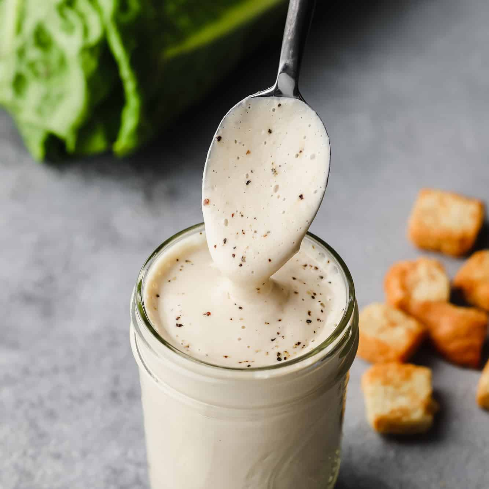

Caesar Dressing

Crafting the perfect Caesar dressing is an art of balance and depth. Begin by infusing the pungent essence of garlic with the salty richness of anchovies, creating a base of robust flavor. A hint of tangy Dijon mustard marries with the bright acidity of freshly squeezed lemon juice and red wine vinegar, each element lending its unique character to the concoction. Slowly, a stream of velvety extra-virgin olive oil is incorporated, transforming the medley into a creamy emulsion that coats every leaf with indulgent satisfaction. Finally, the unmistakable nuttiness of grated Parmesan cheese joins the fray, adding depth and complexity to the dressing, while a touch of mayonnaise imparts a luscious silkiness, culminating in a symphony of taste that elevates any salad to culinary greatness.
Ingredients:
- 2 small garlic cloves, minced
- 1 teaspoon anchovy paste
- 2 tablespoons freshly squeezed lemon juice, from one lemon
- 1 teaspoon Dijon mustard
- 1 teaspoon Worcestershire sauce
- 1 cup mayonnaise
- half cup freshly grated Parmigiano-Reggiano
- quarter teaspoon salt
- quarter teaspoon freshly ground black pepper
- Whisk together the garlic, anchovy paste, lemon juice, Dijon mustard and Worcestershire sauce.
- Add the mayonnaise, Parmigiano-Reggiano, salt and pepper and whisk until well combined